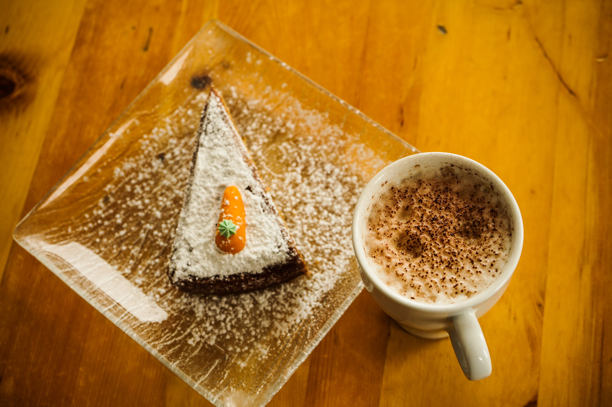

Odin Recipes
-

Original Swiss Cheese Fondue
Traditional Swiss fondue is so easy to make. There are many variations of fondue in Switzerland, but this is the most common version using Gruyère and Emmental cheeses.
-

Carrot Cake
This is the best carrot cake recipe I have ever made! It's so moist and flavorful and makes a large quantity of cake. Since I started making it, I have been hounded to make this cake time and time again. Frost with cream cheese frosting.
-

Dirty Martini
A dirty martini is the perfect cocktail for olive lovers. It can be made with vodka or gin and served on the rocks or chilled.